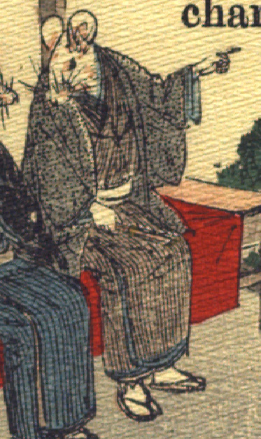

男の鼠。茶色の着物に黒っぽい羽織をまとい、草履をはいている。赤布に覆われた縁台に腰掛け、左手で前方を指し示し、隣の鼠に話しかけている。膝元にやった右手に扇子を掴んでいる。手足は人間のものである。
著作者：J.Dautremer／出典：親書誌：U426_nichibunken_0111：Le mariage de la souris／日付：2006／資源識別子：U426_nichibunken_0111_0003_0002
Copyright (c)2010- International Research Center for Japanese Studies, Kyoto, Japan. All rights reserved.